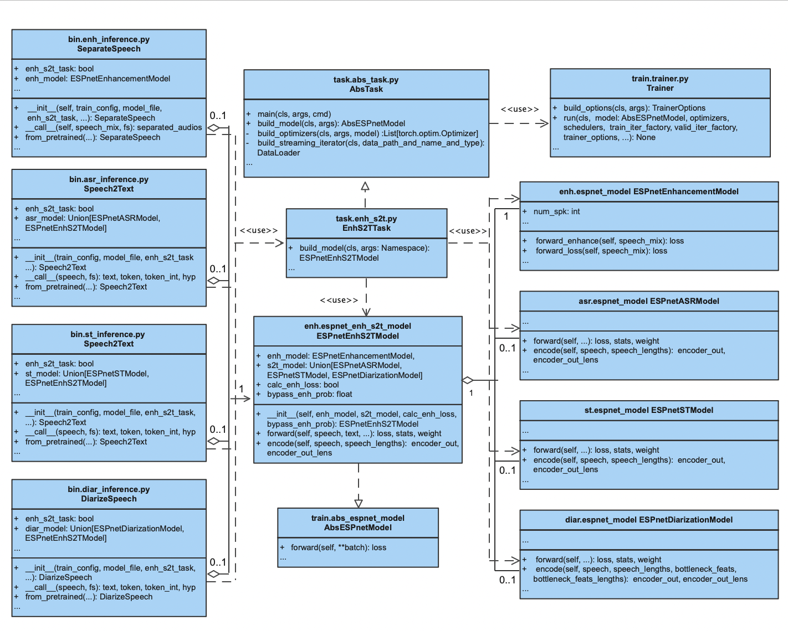

title: ‘Software Design and User Interface of ESPnet-SE++: Speech Enhancement for Robust Speech Processing’ tags:
Python
ESPnet
speech processing
speech enhancement authors:
name: Yen-Ju Lu orcid: 0000-0001-8400-4188 equal-contrib: true affiliation: 1
name: Xuankai Chang orcid: 0000-0002-5221-5412 equal-contrib: true affiliation: 2
name: Chenda Li orcid: 0000-0003-0299-9914 affiliation: 3
name: Wangyou Zhang orcid: 0000-0003-4500-3515 affiliation: 3
name: Samuele Cornell orcid: 0000-0002-5358-1844 affiliation: “2, 4”
name: Zhaoheng Ni affiliation: 5
name: Yoshiki Masuyama affiliation: “2, 6”
name: Brian Yan affiliation: 2
name: Robin Scheibler orcid: 0000-0002-5205-8365 affiliation: 7
name: Zhong-Qiu Wang orcid: 0000-0002-4204-9430 affiliation: 2
name: Yu Tsao orcid: 0000-0001-6956-0418 affiliation: 8
name: Yanmin Qian orcid: 0000-0002-0314-3790 affiliation: 3
name: Shinji Watanabe corresponding: true orcid: 0000-0002-5970-8631 affiliation: 2 affiliations:
name: Johns Hopkins University, USA index: 1
name: Carnegie Mellon University, USA index: 2
name: Shanghai Jiao Tong University, Shanghai index: 3
name: Universita` Politecnica delle Marche, Italy index: 4
name: Meta AI, USA index: 5
name: Tokyo Metropolitan University, Japan index: 6
name: LINE Corporation, Japan index: 7
name: Academia Sinica, Taipei index: 8 date: 22 August 2022 bibliography: paper.bib

Summary¶
This paper presents the software design and user interface of ESPnet-SE++, a new speech separation and enhancement (SSE) module of the ESPnet toolkit. ESPnet-SE++ expands significantly the functionality of ESPnet-SE [@Li:2021] with several new models, loss functions and recipes [@Lu:2022]. Crucially, it features a new, redesigned interface, which allows for a flexible combination of SSE front-ends with many downstream tasks, including automatic speech recognition (ASR), speaker diarization (SD), speech translation (ST), and spoken language understanding (SLU).
Statement of need¶
ESPnet is an open-source toolkit for speech processing, including several ASR, text-to-speech (TTS) [@Hayashi:2020], ST [@Inaguma:2020], machine translation (MT), SLU [@Arora:2022], and SSE recipes [@Watanabe:2018]. Compared with other open-source SSE toolkits, such as Nussl [@Manilow:2018], Onssen [@Ni:2019], Asteroid [@Pariente:2020], and SpeechBrain [@Ravanelli:2021], the modularized design in ESPnet-SE++ allows for the joint combination of SSE modules with other tasks, such as SLU and ASR. Currently, ESPnet-SE++ supports 20 SSE recipes with 24 different enhancement/separation models.
ESPnet-SE++ Recipes and Software Structure¶
ESPnet-SE++ is part of the ESPnet2 framework, and includes the recipes under the egs2 folder and the modularized SSE and joint-task scripts and models under the espnet2 folder. This section describes how these recipes and the ESPNet-SE++ modular codebase are structured.
ESPNet-SE++ Recipes for SSE and Joint-Task¶
espnet/
└── egs2/
├── chime4/
│ ├── enh1/
│ ├── enh_asr1/
│ └── asr1/
├── l3das22/
│ └── enh1/
| │ ├── conf/
| │ ├── local/
| | │ ├── data.sh
| | │ ├── metric.sh
│ | │ └── ...
| │ ├── enh.sh -> ../../TEMPLATE/enh1/enh.sh
| │ ├── run.sh
| │ └── ...
├── lt_slurp_spatialized/
│ └── enh1/
├── slurp_spatialized/
│ ├── enh_asr1/
| │ ├── enh_asr.sh -> ../../TEMPLATE/enh_asr1/enh_asr.sh
| │ ├── run.sh
| │ └── ...
│ └── asr1/
├── ...
└── TEMPLATE/
├── enh1/
│ └── enh.sh
├── enh_asr1/
│ └── enh_asr.sh
├── enh_diar1/
│ └── enh_diar.sh
├── enh_st1/
│ └── enh_st.sh
└── ...
For each task, ESPnet-SE++, following ESPnet2 style, provides common scripts which are carefully designed to work out-of-the-box with a wide variety of corpora. Under the TEMPLATE folder, the common scripts enh1/enh.sh and enh_asr1/enh_asr.sh are shared for all the SSE and joint-task recipes. Symbolic links to the shared scripts are created under each enh1 and enh_asr1 corpus folders and called by their run.sh.
Common Scripts¶
enh.sh contains 13 stages, and the details for the scripts can be found in TEMPLATE/enh1/README.md.
stage 1 to stage 4: data preparation stages
stage 1: Call the local/data.sh script from the recipe to generate Kaldi-style data [@Povey:2011] directories for each subset.
stage 2: Optional offline augmentation of input dataset (e.g. speed perturbation).
stage 3: Create a temporary data dump folder, segment audio files, and change the audio format and sampling rate if needed. This step normalizes the general format of audio files, and thus enables to combine different corpora at training or inference time.
stage 4: Possibly remove too short and too long utterances
stage 5 to stage 6: SSE training steps
stage 5: Collect dataset statistics which can be used to sort examples for dataloading purposes or for normalization
stage 6: SSE task training
stage 7 to stage 8: Evaluation stages: inferencing and storing the enhanced audios (stage 7), and scoring (stage 8)
stage 9 to stage 10: Evaluation stages for speech recognition or understanding: decoding with a pretrained ASR/SLU model (stage 9) and scoring with a pretrained ASR model (stage 10)
stage 11 to stage 13: model uploading steps, upload the trained model to Zenodo or Hugging Face through these three final steps.
enh_asr.sh contains 17 stages and enh_diar.sh and enh_st.sh are similar to it:
stage 1 to stage 5: data preparation stages
stage 6 to stage 9: language model training steps
stage 10 to stage 11: joint-task training steps
stage 12 to stage 13: Inference stages: Decoding (stage 12), and enhancing (stage 13)
stage 14 to stage 15: Scoring recognition results (stage 14) and SSE results (stage 15)
stage 16 to stage 17: model uploading steps, upload the trained model through the final steps.
Training Configuration¶
After the data preparation stages of enh.sh and enh_asr.sh, the training and inference stages call the SSE and joint-task interfaces under espnet2 according to the training configuration in the conf folder.
SSE Task Training Configuration¶
An example of an enhancement task for the CHiME-4 enh1 recipe is configured as conf/tuning/train_enh_dprnn_tasnet.yaml. Part of this configuration is:
encoder: conv
encoder_conf:
channel: 64
kernel_size: 2
stride: 1
decoder: conv
decoder_conf:
channel: 64
kernel_size: 2
stride: 1
separator: dprnn
separator_conf:
num_spk: 1
layer: 6
rnn_type: lstm
bidirectional: True # this is for the inter-block rnn
nonlinear: relu
unit: 128
segment_size: 250
dropout: 0.1
nonlinear: relu
criterions:
# The first criterion
- name: si_snr
conf:
eps: 1.0e-7
# the wrapper for the current criterion
# for single-talker case, we simplely use fixed_order wrapper
wrapper: fixed_order
wrapper_conf:
weight: 1.0
The training configuration describes a single-channel speech enhancement task with a DPRNN [@Luo:2020] model based on a convolutional encoder-masker-decoder framework, popularized by TasNet [@Luo:2018] and Conv-Tasnet [@Luo:2019]. In addition, loss-related modules, wrapper and criterion, are specified. The remaining configurations describe the training strategy and the optimizer configuration.
Joint-Task Training Configuration¶
An example of joint-task training configuration is the CHiME-4 enh_asr1 recipe, configured as conf/tuning/train_enh_asr_convtasnet.yaml. This joint-task includes a front-end enhancmenet model and a back-end ASR model:
# network architecture
enh_encoder: conv
enh_encoder_conf:
channel: 256
kernel_size: 40
stride: 20
enh_decoder: conv
enh_decoder_conf:
channel: 256
kernel_size: 40
stride: 20
enh_separator: tcn
enh_separator_conf:
num_spk: 1
layer: 4
stack: 2
bottleneck_dim: 256
hidden_dim: 512
kernel: 3
causal: False
norm_type: "gLN"
nonlinear: relu
enh_criterions:
# The first criterion
- name: si_snr
conf:
eps: 1.0e-7
# the wrapper for the current criterion
# for single-talker case, we simplely use fixed_order wrapper
wrapper: fixed_order
wrapper_conf:
weight: 1.0
frontend: default
frontend_conf:
fs: 16000
n_fft: 512
win_length: 400
hop_length: 160
frontend_conf: null
apply_stft: True
# encoder related
asr_encoder: transformer
asr_encoder_conf:
output_size: 256
attention_heads: 4
linear_units: 2048
num_blocks: 12
dropout_rate: 0.1
attention_dropout_rate: 0.0
input_layer: conv2d
normalize_before: true
# decoder related
asr_decoder: transformer
asr_decoder_conf:
input_layer: embed
attention_heads: 4
linear_units: 2048
num_blocks: 6
dropout_rate: 0.1
positional_dropout_rate: 0.0
self_attention_dropout_rate: 0.0
src_attention_dropout_rate: 0.0
asr_model_conf:
ctc_weight: 0.3
lsm_weight: 0.1
length_normalized_loss: false
extract_feats_in_collect_stats: false
model_conf:
bypass_enh_prob: 0.0
For the configuration of the front-end SSE model, the joint task configuration describes a network structure identical to that of a single SSE task, including encoder, decoder, separator, wrapper, and criterion. On the other hand, the back-end ASR model also has configurations for its encoder and decoder. To avoid name confusion, the prefix enh_ is added to the submodules of SSE and the prefix asr_ is added to the submodules of ASR.
The following section describes the interfaces, control classes, and modules of the SSE and joint-task models.
ESPNet-SE++ Software Structure for SSE Task¶
espnet/
└── espnet2/
├── bin/
│ ├── enh_train.py
│ ├── enh_inference.py
│ ├── enh_scoring.py
│ └── ...
├── enh/
│ ├── decoder/
│ ├── encoder/
│ ├── layers/
│ ├── loss/
│ │ ├── criterions
│ │ └── wrappers
│ ├── separator/
│ ├── espnet_model.py
│ └── ...
├── tasks/
│ ├── abs_task.py
│ ├── enh.py
│ └── ...
├── train/
│ ├── abs_espnet_model.py
│ ├── trainer.py
│ └── ...
└── ...
Unified Modeling Language Diagram for ESPNet-SE++ Enhancement-Only Task¶
The code flow of ESPNet-SE++ for SSE task training and inference can be visualized in the following diagram.

SSE Executable Code bin/¶
The design of the SSE executable code follows the same high level design and interface of the others ESPNet tasks (e.g. ASR, SLU et cetera). In addition, ESPnet-SE++ has its own scoring method for calculating several popular objective scores for the enhanced/separared speech such as SI-SDR [@le:2019], STOI [@Taal:2011], SDR and PESQ [@Rix:2001].
bin.enh_train.py¶
As the main interface for the SSE training stage of enh.sh, enh_train.py takes the training parameters and model configurations from the arguments and calls
EnhancementTask.main(...)
to build an SSE object ESPnetEnhancementModel, which is used to train the SSE model according to the model configuration..
The training procedure is controlled by the general training class Trainer under train.trainer . After training, enh_train.py saves the SSE model checkpoint and configuration.
bin.enh_inference.py¶
As the main interface for the SSE inferencing stage of enh.sh, enh_inference.py has
class SeparateSpeech
which builds an SSE object ESPnetEnhancementModel through the EnhancementTask.build_model class method based on a pair of configuration and a pre-trained SSE model.
Calling the SeparateSpeech object with an unprocessed audio returns a list of separated speech, where the length is the same as the number of speakers. The audio is enhanced by calling the encoder, separator, and decoder classes in the SSE model.
The inference function in enh_inference.py contains the full inference process, which builds and calls a SeparateSpeech object with the data-iterator for testing and validation data.
bin.enh_scoring.py¶
The SSE scoring functions currently support calculating multiple objective scores, including STOI, ESTOI, SI-SNR, SDR, SIR, and SAR scores. These scores are calculated based on the reference signal and processed speech pairs:
def scoring(output_dir,...,ref_scp, inf_scp, ...)
The scoring function also provides a summary of the scores throurough the test dataset for the SSE scoring stage of enh.sh.
SSE Control Class tasks/¶
tasks.enh.py¶
class EnhancementTask(AbsTask)
EnhancementTask is a control class which is designed for SSE task, containing class methods for building and training an SSE model, including preprocessor, data_loader, and collate_fn. Class method build_model creates and returns an SSE object from
enh.espnet_model.ESPnetEnhancementModel
SSE Modules enh/¶
enh.espnet_model.py¶
class ESPnetEnhancementModel(AbsESPnetModel)
ESPnetEnhancementModel is the base class for any ESPnet-SE++ SSE model. It consists of encoder, decoder, separator, criterion, and wrapper. Since the ESPnetEnhancementModel inherits the same abstract base class AbsESPnetModel, it is well-aligned with other tasks such as ASR, TTS, ST, and SLU, bringing the benefits of cross-tasks combination. The forward functions of the class include three diffeent interfaces where the first one
def forward(self, speech_mix, speech_ref, ...)
forward follows the general design in the ESPnet single-task modules, which processes speech and only returns losses for the trainer to update the model. However, enhanced speech is necessary for joint-task training. The forward function is further divided into two sub-functions for more flexible combinations:
def forward_enhance(self, speech_mix, ...)
def forward_loss(self, speech_pre, speech_ref, ...)
The forward_enhance function returns the enhanced speech, and the forward_loss function returns the loss. The joint-training methods take the enhanced speech as the input for the downstream task and the SSE loss as a part of the joint-training loss.
encoder, separator, and decoder¶
The SSE model contains three submodules: encoder, separator, and decoder. Encoder and decoder options include short-time Fourier transform (STFT) and inverse STFT (iSTFT) for the time-frequency (TF) domain models, and convolutional layers and transposed convolutional layers for time domain models.
The separator is a sequence mapping neural network, which takes the input from the encoder and generates separated output features. The number of separated features is the same as the number of the speech sources, and for most SSE models, separator only has one output feature. Finally, the decoder transforms the features into the target audios.
This modular design allows for the exploration of many different architectural variations with less complicated code. The same separator can be used with different encoders/decoders (e.g., SSL/Freq domain)
criterion and wrapper¶
The criterion is an implementation of loss functions, including time domain criteria and TF domain criteria. The time domain criteria take the estimated audio and target audio as input, and the TF domain criteria take the estimated feature and the encoded features of target audio as input. The output of the criterion is a scalar loss value.
Instead of calculating the loss by directly passing all the separated features and references into the criterion, ESPnetEnhancementModel calculates the loss through the wrapper combined with a criterion. For example, the Permutation invariant training (PIT) [@Yu:2017] algorithm is designed as class PITSolver(AbsLossWrapper) with the procedure to find the best permutation. This modular design allows researchers to design custom wrapper classes for implementing complicated training objectives conveniently.
ESPNet-SE++ Software Structure for Joint-Task¶
espnet/
└── espnet2/
├── bin/
│ ├── asr_inference.py
│ ├── diar_inference.py
│ ├── enh_s2t_train.py
│ ├── st_inference.py
│ └── ...
├── enh/
│ ├── espnet_enh_s2t_model.py
│ └── ...
├── tasks/
│ ├── enh_s2t.py
│ └── ...
└── ...
The design of the joint-task code follows the same design as SSE and other tasks, where the enh_s2t stands for the joint-task of SSE and a downstream speech-to-text (s2t) task, including automatic speech recognition (ASR), spoken language understanding (SLU), speech translation (ST), and speaker diarization (SD) tasks.
Unified Modeling Language Diagram for ESPNet-SE++ Joint-Task¶
The code flow of ESPNet-SE++ for joint-task training and inference can be visualized as the following diagram.

Joint-Task Executable Code bin/¶
Executable scripts for joint-task include training and inferencing code. Currently, joint-task does not have their task-specific methods.
bin.enh_s2t_train.py¶
Similar to the interface of SSE training code enh_train.py, enh_s2t_train.py takes the training parameters and modular parameters from the training stage of the joint-task scripts, and calls
tasks.enh_s2t.EnhS2TTask.main(...)
to build a joint-task object for training the joint model based on a configuration with both SSE and speech-to-text models information with or without pre-trained checkpoints. After training, instead of saving two models separately, enh_s2t_train.py saves a joint-task checkpoint and configuration for the enh_s2t task.
bin.asr_inference.py, bin.diar_inference.py, and bin.st_inference.py¶
As the interface for the downstream speech-to-text decoding stage of the joint-task scripts, asr_inference.py, st_inference.py and diar_inference.py have
class Speech2Text
class DiarizeSpeech
to process speech for each task. During their initialization, the classes can build a back-end model object through their own back-end task classes or a joint-task object ESPnetEnhS2TModel through the EnhS2TTask.build_model class method with pre-trained joint-task models and configurations.
Calling the SeparateSpeech or DiarizeSpeech objects with an unprocessed audio returns a list of text results and tokens. The audio is enhanced and recognized by calling the encode function and decodeor beam_search functions, where the encode function applies both the front-end SSE model and the encoder of the back-end model.
The inference function in asr_inference.py, diar_inference.py, and st_inference.py contains the full inference processes, which build and call a SeparateSpeech object or DiarizeSpeech object with the data-iterator for testing and validation.
bin.enh_inference.py¶
As introduced in the SSE task section, enh_inference.py has SeparateSpeech object with an SSE object attribute ESPnetEnhancementModel. The ESPnetEnhancementModel object can be created through both EnhancementTask.build_model and EnhS2TTask.build_model class methods for the enhancing stage of the joint-task scripts.
Joint-task Control Class tasks/¶
tasks.enh_s2t.py¶
class EnhS2TTask(AbsTask)
class EnhS2TTask is designed for joint-task with an SSE model front-end and a back-end subtask model. Class method build_model creates a front-end and a back-end subtask models based on the subtask_series argument. The subtask models are then sent into the __init__ function from
enh.espnet_enh_s2t_model.ESPnetEnhS2TModel
to create and return an joint-task object.
Joint-Task Modules enh/¶
enh.espnet_enh_s2t_model.py¶
class ESPnetEnhS2TModel(AbsESPnetModel)
Like ESPnetEnhancementModel, ESPnetEnhS2TModel inherits the abstract base class AbsESPnetModel and has the same interface as other tasks. The consistent modularized design enables the models in various tasks to be combined easily. In addition, the pre-trained checkpoints for different modules can be loaded into the joint model.
The __init__ function takes an enh_model, and an s2t_model as inputs to build a joint model containing both front-end and back-end models.
def __init__(
self,
enh_model: ESPnetEnhancementModel,
s2t_model: Union[ESPnetASRModel, ESPnetSTModel, ESPnetDiarizationModel],,
...
):
The front-end model currently should be an SE model, and the back-end model could be ASR, SLU, ST, and SD models.
The forward function of the class follows the general design in ESPnet2 single-task modules:
def forward(self, speech_mix, speech_ref, ...)
which processes speech and only returns losses for Trainer to update the model.
ESPnet-SE++ User Interface¶
Building a New Recipe from Scratch¶
Since ESPnet2 provides common scripts such as enh.sh and enh_asr.sh for each task, given a new corpus ideally users would only need to create local/data.sh for the data preparation.
Prepare the data : local/data.sh¶
The data for each recipe is created by their own local/data.sh. The generated data follows the Kaldi-style structure:
enh_asr1/
└── data/
├── train/
│ ├── text
│ ├── spk1.scp
│ ├── wav.scp
│ ├── utt2spk
│ ├── spk2utt
│ └── segments
├── dev/
└── test/
text: The transcription for each utterance (Optional for the SSE task).spk1.scp: Wave file path to the clean utterances.wav.scp: Wave file path to the noisy utterances.utt2spk: Mapping utterance-id to speaker-id.spk2utt: Mapping speaker-id to utterance-id.segments: Specifying the start and end time of each utterance (Optional).
Since the tasks share the same data pre-processing format, the data can be easily used for different tasks. The detailed instructions for data preparation and building new recipes in espnet2 are described in the egs2/TEMPLATE
Scoring metrics for challenges and benchmarks (optional)¶
Some of the challenges and datasets have their own metric calculation. The recipe-specific scoring scripts are prepared under the local/ directory of each recipe (if needed).
Example of the L3DAS22 Challenge:
Usage: local/metric.sh <predicted scp> <target scp>
>>> local/metric.sh exp/enh_train_enh_ineube_raw/enhanced_test_multich/spk1.scp dump/raw/test_multich/spk1.scp
word error rate: 4.85
stoi: 0.957
task 1 metric: 0.954
Inference with Pre-trained Models¶
Pretrained models from ESPnet are provided on HuggingFace and Zenodo. Users can download and infer with the models.model_name in the following section should be huggingface_id or one of the tags in the table.csv in espnet_model_zoo . User can also directly provide a Zenodo URL or a HuggingFace URL.
Inference API¶
The inference functions are from the enh_inference and enh_asr_inference in the executable code bin/
from espnet2.bin.enh_inference import SeparateSpeech
from espnet2.bin.enh_asr_inference import Speech2Text
As described in the previous section, calling SeparateSpeech and Speech2Text with unprocessed audios returns the separated speech and their recognition results.
SSE¶
import soundfile
from espnet2.bin.enh_inference import SeparateSpeech
separate_speech = SeparateSpeech.from_pretrained(
"model_name",
# load model from enh model or enh_s2t model
enh_s2t_task=True,
# for segment-wise process on long speech
segment_size=2.4,
hop_size=0.8,
normalize_segment_scale=False,
show_progressbar=True,
ref_channel=None,
normalize_output_wav=True,
)
# Confirm the sampling rate is equal to that of the training corpus.
# If not, you need to resample the audio data before inputting to speech2text
speech, rate = soundfile.read("long_speech.wav")
waves = separate_speech(speech[None, ...], fs=rate)
This API allows the processing of both short audio samples and long audio samples. For long audio samples, you can set the value of arguments segment_size, hop_size (optionally normalize_segment_scale and show_progressbar) to perform segment-wise speech enhancement/separation on the input speech. Note that the segment-wise processing is disabled by default.
Joint-Task¶
import soundfile
from espnet2.bin.asr_inference import Speech2Text
speech2text = Speech2Text.from_pretrained(
"model_name",
# load model from enh_s2t model
enh_s2t_task=True,
# Decoding parameters are not included in the model file
maxlenratio=0.0,
minlenratio=0.0,
beam_size=20,
ctc_weight=0.3,
lm_weight=0.5,
penalty=0.0,
nbest=1
)
# Confirm the sampling rate is equal to that of the training corpus.
# If not, you need to resample the audio data before inputting to speech2text
speech, rate = soundfile.read("speech.wav")
nbests, waves = speech2text(speech)
text, *_ = nbests[0]
print(text)
The details for downloading models and inference are described in the espnet_model_zoo.
Demonstrations¶
The demonstrations of ESPnet-SE can be found in the following google colab links:
Development plan¶
The development plan of the ESPnet-SE++ can be found in Development plan for ESPnet2 speech enhancement. In addition, the current joint-task design for the front-end task needs to be speech-to-speech transformation, and the back-end task needs to take speech as input to generate recognition, understanding, or translation results. In the future, we would like to extend to other type of combinations, such as using ASR as a front-end model and TTS as a back-end model to create a speech-to-speech conversion, making the selection of front-end and back-end modules more flexible.
Conclusions¶
In this paper, we introduce the software structure and the user interface of ESPnet-SE++, including the SSE task and joint-task models. ESPnet-SE++ provides the general recipes for training models on different corpus and a simple way for adding new recipes. The joint-task implementation further shows that the modularized design improves the flexibility of ESPnet.
Acknowledgement¶
This work used the Extreme Science and Engineering Discovery Environment (XSEDE) [@Towns:2014], which is supported by NSF grant number ACI-1548562. Specifically, it used the Bridges system [@Nystrom:2015], which is supported by NSF award number ACI-1445606, at the Pittsburgh Supercomputing Center (PSC).